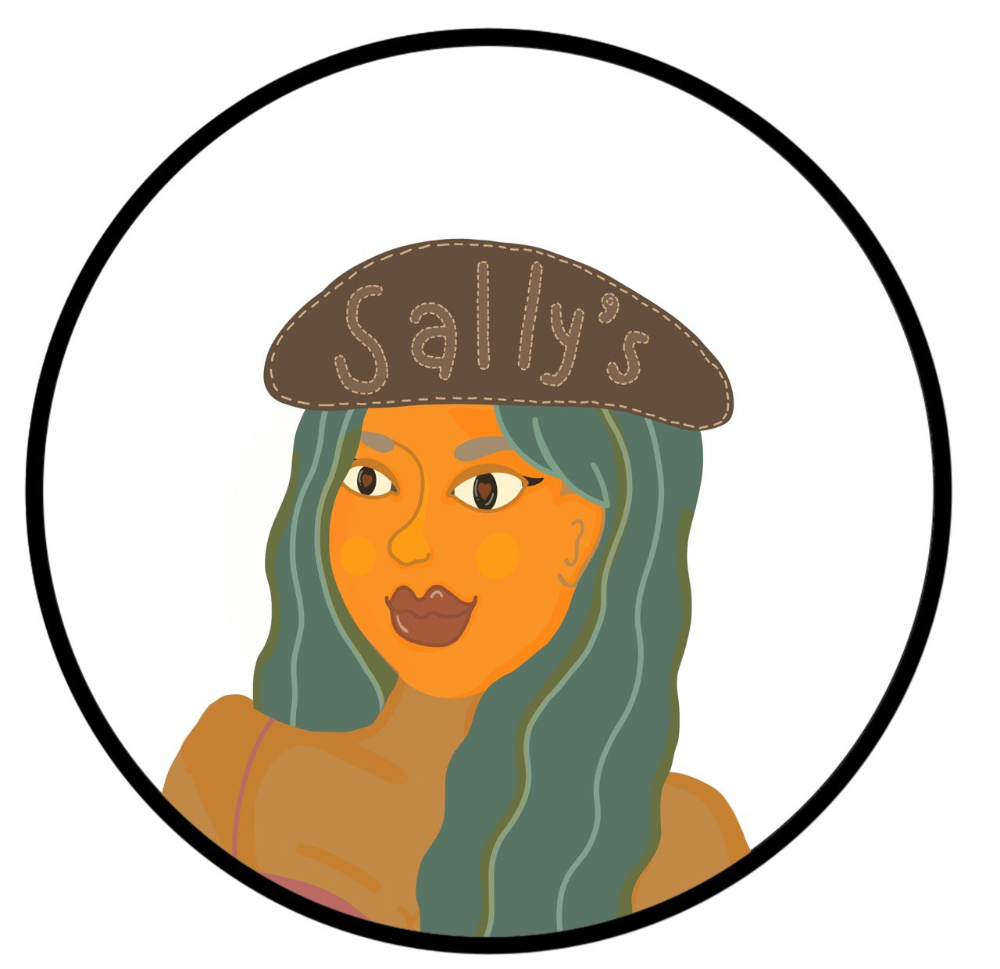

Sally

Summary
"𝙒𝙝𝙖𝙩 𝙬𝙤𝙪𝙡𝙙 𝙡𝙞𝙛𝙚 𝙗𝙚 𝙞𝙛 𝙬𝙚 𝙝𝙖𝙙 𝙣𝙤 𝙘𝙤𝙪𝙧𝙖𝙜𝙚 𝙩𝙤 𝙖𝙩𝙩𝙚𝙢𝙥𝙩 𝙖𝙣𝙮𝙩𝙝𝙞𝙣𝙜?" the quote from Vincent Van Gogh always encourages me to do everything I need without any fear.
A Bachelor of Mechanical Engineering from University of X in 2019 never stopped me from exploring and learning new things.
According to my interest in logic programming, I sought an opportunity to learn and work in the technology field and afterwards, I applied to Coding-Camp to be a trainee developer in October 2021.
Education
- Bachelor of Mechanical Engineering, - University of X (2015-2019)
Work Experience
-
Estimating Engineer - Town & Country Planning Company.
Sep 2019 - Sep 2021
- Determining material costs, labor rates, and overhead expenses for each step of a project and adding them up to calculate an overall estimate.
- Estimating mandays for Mechanical technician works.
-
Programming Analyst - Coding-Camp.
Oct 2021 - Mar 2022
- Training for WPF, Xamarin, Web server API.
Jul 2022 - Jul 2024
- Developing a mobile application (using Xamarin Forms, C#, and .Net framework).
- Developing automation testing for WPF applications using a robot framework.
- Paticipate in estimating and analysing scope of workload for sprint.
Skills
- .Net Framework
- MAUI, Xamarin Forms
- Using C#
Other
Contact me